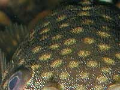
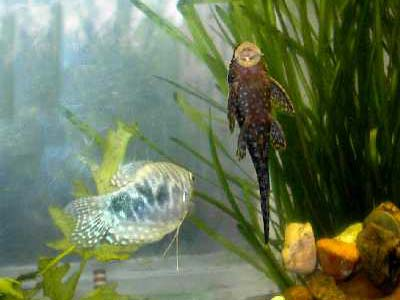
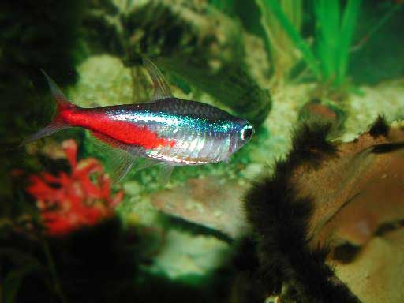
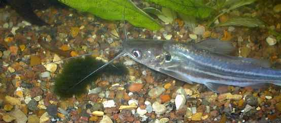
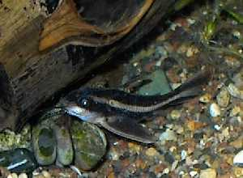
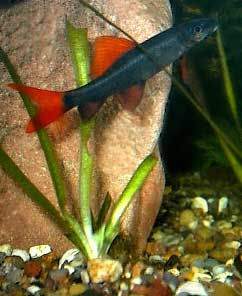

Аквариум
У меня два аквариума, для больших и для маленьких рыб. Эту красивую другую жизнь можно рассматривать часами.

У анциструса
не
чешуя, а шерсть?


Аквариум на фоне окна не рекомендуют, но иногда можно

Неон

Сом мистус. Ему 9 лет. Он всегда был старшим и самым большим
в аквариуме. Поэтому он не научился убегать от врага. А сейчас
его способности к обучению равны нулю. Когда появился ауратус
и обкусал ему усы, сому пришлось переселиться в другой аквариум.

Сом
Platydoras costatus .
Выплывает из укрытия, только
услышав суету кормёжки.

Лабео